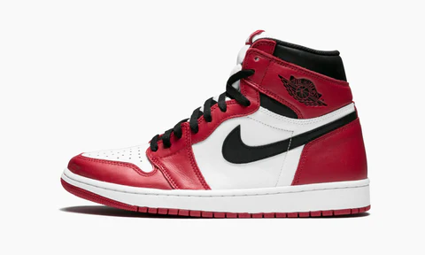
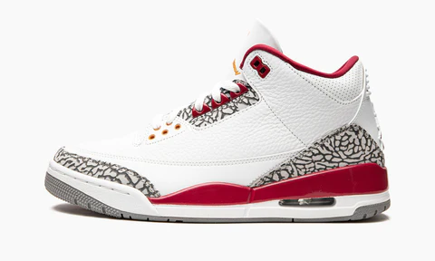
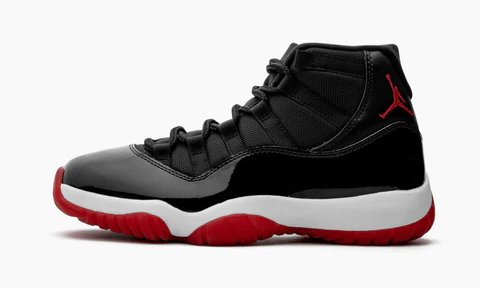
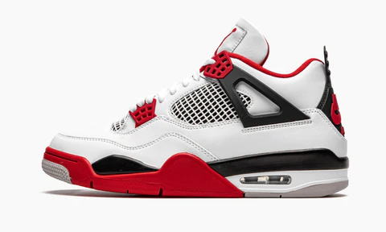
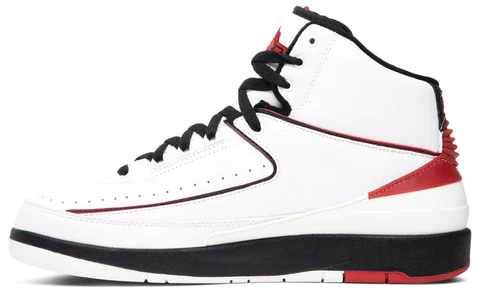

Zapatillas
Desde que llegaron a nuestras vidas, las Air Jordan han revolucionado el mundo de las sneakers y no solo desde el marketing, sino también desde el punto vista del diseño; al contar con talentos como Peter Moore y Tinker Hatfield, creando increíbles modelos con sus ediciones limitadas y conocidas reediciones.Sin embargo, como en todos los dreamteam, algunas brillan más que otras y desde aquí hemos decidido presentaros nuestros 5 modelos favoritos.
1.AIR JORDAN I: 1985

Hay veces que no importa ser el mejor, sino ser el primero. Sin embargo amigos, nuestra protagonista reúne ambas cualidades, por lo que no se puede hablar de Streetwear sin las Jordan I, y más en concreto de las famosas Chicago, con su innovadora cámara de aire hasta el logotipo alado representando al 23 más famoso de la historia, las Air Jordan I son la joya de cualquier sneakerhead.
2.AIR JORDAN III:1988

El primer diseño de Tinker Hatfield sustituyendo a Peter Moore. Continuando con el modelo sin el icónico “Swoosh” introducido con sus predecesoras y añadiendo increíbles paneles con estampado de elefante. Pero lo realmente relevante de esta zapatilla es la introducción del conocido Jumpman como logotipo.
3.AIR JORDAN XI: 1995

Michael Jordan ya se había convertido en la mayor estrella del planeta con su vuelta a la NBA tras su paso por las grandes ligas de baseball, ganando su cuarto anillo y siendo coronado como MVP. Protagonizó Space Jam, y se consolidó como un fenómeno en la cultura del pop con nuestras protagonistas, haciéndonos creer que todos podíamos volar, con su zona de charol, una suela traslúcida y lazos de cordones de araña.
4. AIR JORDAN IV: 1989

Otra de las joyas de la gran pantalla, presentes en la película del famoso Spike Lee “Haz lo que debas”. Mostraban un nuevo sistema de cordones conocidos como “alas”, con paneles laterales y una malla en la lengüeta. Unas sneakers con las que “nadie debería pisarte”.
5.AIR JORDAN II:1986

Fueron las primeras Jordan que presentaban detalles de lujo, como la imitación de la piel de lagarto y ser la primera edición “made in Italy”. La primera sneaker en perder el tan reconocido swoosh y en romper los límites
Volver arriba